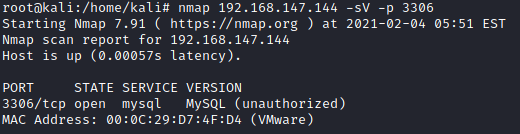

MySQL
MySQL is a popular open source
Relational Database Management Systems (RDBMSs).
By default, a MySQL database running on a server will be listening on TCP port 3306
MariaDB is an open source RDBMS fork of MySQL, the source code of MySQL 5.1.38 was taken as the starting point for MariaDB
Unlike MySQL, MariaDB is not owned by a commercial entity, meaning that it is likely to remain open source indefinitely.
Many of the vulnerabilities found in MySQL have also been found to affect MariaDB because of the shared lineage of the two RDMSs.
